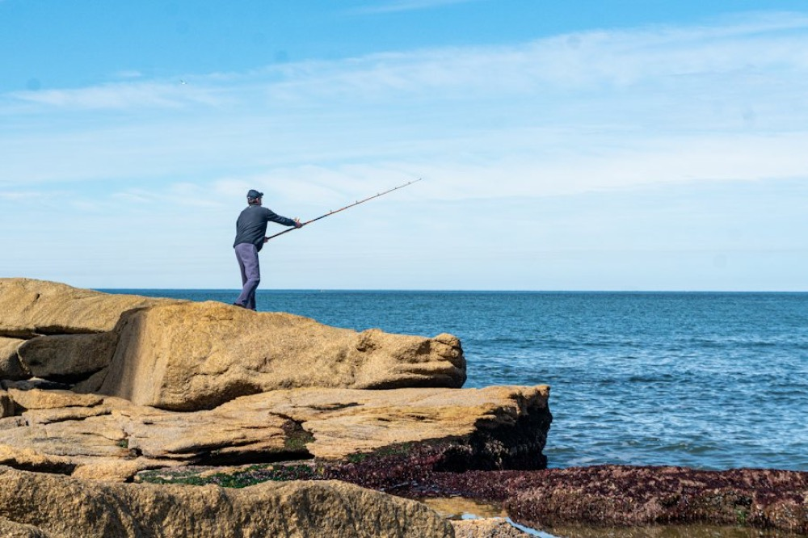

Owen Kleinhans@DieVisKoningFollowLargemouth bass
30 cm · 1.2 kgBy eye
Caught at Mimosa OD, Fri 18 Sept, 17:47 · 21 h ago
Last light on the bank, took a frog over the weed.
32See the catch
The card stays. Three changes: Follow moves up beside the angler it concerns, the species and its size become one block, and the action row is one line with See the catch on its right. The counts sentence under the icons is gone; the numbers sit on the icons. Components: PageHead (with the Global and Local Segment on the plate), FeedPostBlock, CommentThread.
The Global and Local switch moves onto the plate, so the black band carries something and the first card starts sooner. Kicker cut to two words.
CommentThread opens inside the card under the action row, four at a time. The angler's own title, when it says more than the species, sits above the notes.
30 cm · 1.2 kgBy eye
Caught at Mimosa OD, Fri 18 Sept, 17:47 · 21 h ago
Frog fish
Last light on the bank, took a frog over the weed.
Lekker fish. What did it take?
A frog, walked slow over the weed.
That dam fishes well after a warm day.
Well done.
The common card. The 4:3 frame is kept and given the house fish and a teal rule, so a row of cards holds its rhythm. Nothing says "not measured": a size that was not taken is simply not there.
Caught at Mimosa OD, Fri 18 Sept, 17:47 · 21 h ago
The card stays black on a black page and takes a paper hairline so it still has an edge. The waterline paints in the night ground.
The card turns sideways at desktop: the photograph on the left at 600 wide, the fish and the actions on the right. A 960 column no longer holds a 720px tall photograph; three cards fit a screen instead of one.